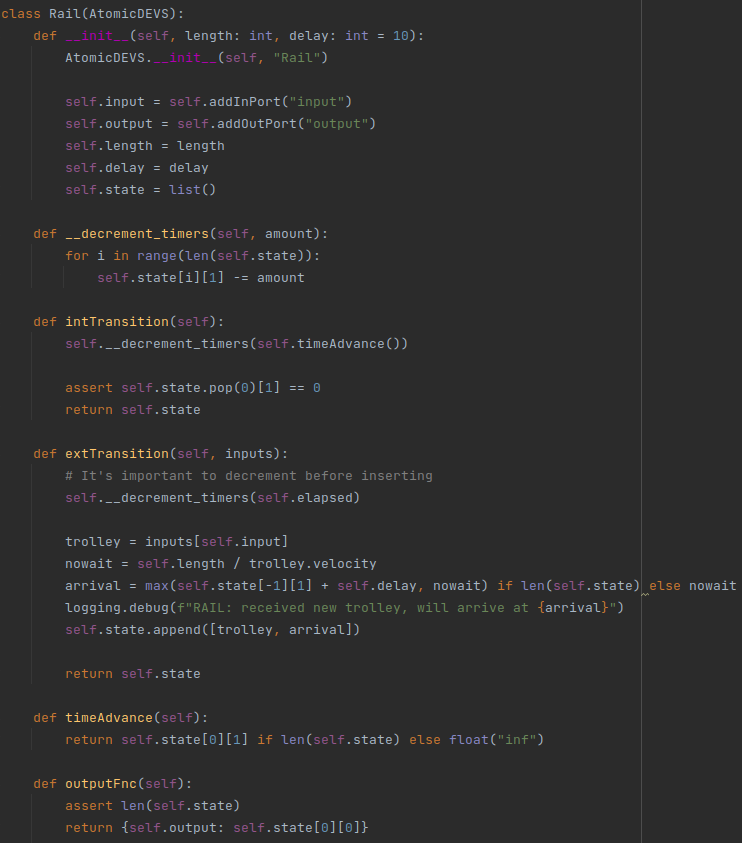

Assumptions
-
The two tracks joining at zeigler Circus first pass through a virtual junction with traverse_delay of 0 seconds, the junction and the station are connected with a track of length 0 meters.
-
Capacity of the trolley over time is interpreted as amount of passengers in the trolley as the capacity of the trolley would just be a flat line. We measure this at every possible timestep and not only when the trolley in departing. Combined with the fact that the trollies spend most of their time at stations, half-empty this value may be lower than expected.
-
We don't have any special logic for passengers that have an unreachable destination, they will just wait indefinitely.
-
Furthermore, when no passengers are available at a station to fill the trolley, the trolley stays waits there until full no matter what. This makes some travel times longer than expected. Stations served by multiple lines will have trollies wait quite long (as there may be fewer passengers with the destination on that line). Which blocks the other trollies in the system.
-
Lastly we assumed that multiple trollies can be on a junction at the same time and don't interfere. If a trolley arrives at time 0 and one at time 1, they would leave the junction at respectively 50 and 51 using default values.
Part 1: Components of the Model
Passenger
The code can be found here.
We see here that we use a dataclass to create a new passenger. The passenger has the default attributes, such as the origin and the destination. We also store the all the stations related to a specific line. This is so that the passenger knows where step off. Finally, for extra statistics, we also maintain the time at what the passenger departed and when it arrived as well as the id of the trolley we used.
Trolley
The code can be found here.
As with the passenger, we used a dataclass and have the default parameters of the trolley, like the velocity, the line it serves and the capacity. Naturally, we also keep the passenger list. To reduce code duplication prove to silly mistakes,We have defined a helper function to identify if the trolley is full.
Rail
The code can be found here.
A rail has an input and an output port, through which they can receive trollies. It also has a given length, as well as a delay (default = 10) during which we need to wait before letting another trolley pass. The last piece of the puzzle is the fact that we have a state, that contains all the trolley and remaining times time trollies on the rail.
First off we have a helper function that decrements the timers of each of the trollies that are waiting by a certain amount. Next up, we have some functions related to DEVS formalism itself. The timeAdvance function does contain the value of the first trolley in the queue, otherwise we have an infinite timeAdvance. So that there won't fire anything in the model. For the internal transition we make it so that there is a trolley that can depart, because it's timer should be 0. As a consequence, we remove the trolley from the queue. As an outputFunction we take the front of the queue and return that trolley. When we have an external transition we first need to decrement the timers by the elapsed time (this is equivalent to ignoring an event and having multiple timers). The remaining time of arrival for a trolley is calculated as follows: we calculate the time if the trolley were to drive full speed (nowait variable). We then take into account if there is a trolley in front of it with a max of both.
Junction

The code can be found here.
A junction joins multiple rails together and has one output rail. To obtain this in DEVS we have multiple input ports and one single output port. Apart from this, we also need to keep the transfer time of a junction (i.e. how long it will take before another trolley can transfer the junction). We also keep the name of the junction and a state. This state contains a list of lists, which themselves contain 2 elements, namely the trolley and the remaining time.
The logic is almost the same as with the rail, apart from the external transition function. We take the trolley out of the inputs and append it to the list of the trollies to pass.
Split

The code can be found here.
For the split we only need one input track, but multiple output tracks. This is almost the exact opposite of the junction, we also need to keep a routing, which line need to be outputted on which output track (e.g. red line goes to output track 0, yellow to 1 and blue also to 1). We also have a state that is initially None.
The internal transition always resets the state to None, this signifies the trolley being removed from the split after being outputted. The external transition will temporarily store the trolley in the state. We use the routing in the output function in order to output the trolley on the right output rail. The time advance is only immediate when there is a trolley currently being split otherwise we wait infinitely for the next trolley.
Station
The code can be found here.
Most of the code written here is because this is a coupled DEVS, so not a lot can be said about this part. The num_outputs is calculated based on the highest split value, so if a user enters the red line to go to output 10, there will be 10 outputs. The other part is the routing, that has already been described before. Lastly the destinations parameter is the possible destinations that can be used for the passengers generator.
Generator

The code can be found here.
From the generator we only need an output port in order to receive the passengers on the station. We also need their origin station. We use a set of all the aforementioned possible destinations, and along with that we need the parameters for the normal distribution, mu and sigma. Then we also have the lines which contain the stations for all lines. This is used for passengers to decide whether to board a trolley or not. For the last attribute we have the state, which encompasses the remaining time for the next passenger and the total amount of passengers that have been generated, which is used in the statistics.
The distribution method will calculate the time for the next passenger to be generated. When we perform an internal transition we increase the generated passengers by 1 and update the remaining time by a new value generated by the distribution. The time advance will always be the time at which the next passenger will be generated. The output function generates a new passenger, which brings along with it an origin, a destination and the corresponding lines. The statistics function just gives the amount of passengers that have been generated.
Collector
The code can be found here.
This part of the code makes use of the statistics gathering pattern, as well as the complex state pattern. We have the collector statistics class, which contains some parameters like the average time that a passenger traveled (which is 0 when we don't have any passengers), the amount that exited at a (desired) destination and the amount that exited at their origin destination. We have the collector which keeps the departed passenger (in our terms this means that the passenger arrived if this event occurs), the origin station and all the passengers as well as the elapsed time since the beginning. This elapsed time since the beginning is called the simulated time and is another pattern for DEVS.
For the next part we'll discuss the methods. The first method is the time advance, because we never will never perform an internal transition or output something, this must always return infinite. Therefore, we have fewer functions, but we have an external transition, which logs all the passengers that leave the track and as a consequence a trolley. In this method we take that passenger and store it into the list of passengers for that track.
Platform

The code can be found here.
On a platform we have two input ports (the passenger entry and the request passenger) and an output port (board). These three provide an interface to the generator, the track and the track respectively. The state contains a queue of waiting passengers, a requested parameter and the simulated time. We also keep the origin (station name) of the platform.
We first describe the helper method passenger_indices. This method is used to get the indices from all the passengers that are in the queue waiting for a trolley that serves a line that has the destination of the passenger. We use the simulated time pattern described in the course notes. In order to decide what the time advance should be we check if there is a passenger requested by the track, if there is then we set the time advance to 0, otherwise we set it to infinity. The internal transition is performed by selecting all the candidates, that can be on the line. We unset the requested state and remove that retrieved candidate, the first valid candidate, from the queue. For the external transition we need to select the line of the requested passenger. And only when we have passengers waiting for that line we can set the requested parameter in the state to the line that is requested. Otherwise, if we have a passenger entry, we need to add it to the passenger queue. Last but not least, we have the output function, that can only be executed if there is a requested passenger, and there are candidates. The candidates are then chosen from the candidates list, and only the first candidate is chosen that has a destination that is on the requested line. We also store the departed time of the candidate passenger for later statistics.
Track

The code can be found here.
For this part we chose an atomic DEVS to encode the track. First, we need to set all the different types of waiting times, notice that the first 1 is the amount of seconds. This is because we need to 'busy poll' the light for a new trolley to enter. The first part of arriving at a track at a station is a certain arriving delay, for which we wait at a station, the next part is the unboarding of the trolley, followed by the boarding of the trolley. Lastly, we have the time that it takes to depart from the station. We add some input and output ports as shown in the station diagram. Next up we define the origin of the station and the probability of mistakenly unboarding at that station.
The passenger indices helper function gives back all the passengers that will leave the trolley, this is either because they need to be there. Or there is a slight chance that they are confused and get off the trolley (by default, this has a 20 percent chance of happening). The internal transition checks in which state it is and depending on the state it chooses what to do. There is an interesting side note on the random handling. We can choose to do this in a number of ways:
- Go over every passenger in the trolley for every unboard trigger and find someone either by luck or desired exit. This has the issue that the first passenger in the list has a way higher chance to exit wrongfully as the 20% is calculated multiple times.
- Even if we do random sampling this still isn't fair.
- Calculating some combined probability of a random person exiting based on the amount of people also isn't correct as it doesn't allow for multiple wrong exits.
- Our last option is precalculate the list and keep it around as some kind of temporary state. This is far from elegant but it works. The list of passengers to exit is in state[2] and the current index of which passenger we are at is in state[3]. We need to keep both as otherwise we would be changing the state when we aren't allowed to. We also need to be careful about as we are working with indices, removing an element from the original list will invalidate the next ones, so we only actually remove everyone at the end.
We will now describe the internal transition
- When the trolley has finished arriving then the state must become unboarding.
- When we discover that we are in the state unboarding, and we did disembark everyone in the list, i.e. the counter is the length of the list, we can get to the boarding phase. This phase takes all the passengers that can board and boards them onto the trolley and set the state to the boarding state and keep the trolley also in it. We also check that the passengers still on the trolley plus the passengers that should unboard, equals the previous total passengers on the trolley, before the unboarding was complete.
- When we only have that we were in the unboarding phase we need to lower the amount of passengers that can unboard.
- When we try to board when the trolley is full then we can move to the state departing.
- When we are in the state departing, then we just can depart.
For the external transition we need to fire we need to have a board input or a dequeue input.
- If we have a board input we need to check that we are in the boarding state, check that the capacity of the passenger is lower or equal to that of the trolley, and check that the destination of the boarding passenger is on the line that it is boarding. We take the passenger of the input and store the name of the trolley within the passenger. Then we add the passenger to the passengers that have boarded the trolley.
- For the dequeue of the trolley input, we need to check that the state is none and the trolley arriving. This is so we can set the state to arriving and the trolley that has been given to the track.
The time advance just keeps the waiting time of the current phase or state it's in. For the output function we have different actions depending on the internal state.
- When we are in the state none, there is nothing to return and no trolley to request.
- When we are in the unboarding state, and we still have to unboard passenger from the list, we need to signal the collector to receive the passenger that has just unboarded.
- When the state is boarding and the trolley still isn't full we can request a passenger for the line the trolley is a part of.
- When we are in the departing state we can move to the split also the called the output.
Light

The code can be found here.
We have 2 different input ports: the request of a trolley and the input of a trolley. The output is the dequeue of a trolley. We also keep a queue of trollies in the state and the fact that there is a trolley requested to false.
The time advance will be 0 if there is a trolley requested, otherwise infinity. We always will reset the requested when we perform an internal transition and pop the last trolley from the queue, as we do the internal transition as last thing. The external transition will check if there is a request for a trolley and set it to true if the queue has a length larger than 0, otherwise nothing will be returned. We should also add the trolley to the queue if there is a trolley that arrived at the light. The output function returns the trolley that is first in the queue.
Part 2: Creating the network
In order to represent the network, we've chosen to employ the JSON format. This is because we thought this would the most light-weight format to create a flexible solution of modeling the rail network. In the next paragraphs we'll discuss the format of the JSON and then the code that is used to interpret this JSON. The JSON for the network described int assignment can be found here. The network hasn't undergone any big transformations, if there is a transformation that is worth of mentioning, we will do this in the JSON format part. The units we used for the model are seconds and m/s. This is because this way we don't need to deal with unnecessary and complicated floating point conversions from minutes to seconds.
JSON format

First of all we have the stations. Its value is a list that contains the name of a station, and a split. This split is a dictionary of the outgoing lines at that point. The names are the line names (in this case the colours) and the numbers are on which track they need to go. We look at these outgoing lines clock-wise, starting from 9 o'clock (this may seem weird, but it's very intuitive once you get it).

Next up we have the junctions. Each junction has a name, an input and possibly the transfer_time. The transfer time is the time that it takes to take the junction, by default this is 50, so it is not specified for 2 of the 3 junctions. The third junction belongs to a station. The last junction is added, because a station can't combine 2 different tracks as described in the assumptions.

Now, we have the rails list. This contains a list of all the possible rails in the model. Each entry contains the name, length, the start station/junction name and the end station/junction name. You can see that sometimes we define the start_port and the end_port. This needs only to be done when we depart from a station and arrive in a junction, this is so it knows which output from the station or input from the junction it has to connect to.
This value can be set so that passengers generated at a station can have a destination that is this station or a station that is not located on the station's on the line. So if it is true only the stations that do not have those parameters can be chosen.
Following the meta element, we have the lines. The lines are again a list. We first have the name (or colour in our case) of the line and then all the stations that it contains.

Lastly, we have a list of trollies. Each of these entries contain the velocity of the trolley (in m/s), the location at which they start and the line to which they belong. Each trolley also has a name used for the readability and traceability of the statistics.
JSON parsing
In order to read and serialize the JSON file we need the classes file and the parse file. The classes file is used to represent the data for each of the model elements. The parse file contains the code to parse the JSON file format into the specified classes. We can look at the classes as some sort of intermediary representation of the system. If any other parsing method is required we can use this to easily extend the system. We use the dictionary splat operator (turning a dict, or JSON object into the key value pairs as arguments to a function or constructor)to turn the dicts returned by the parser into arguments for the classes in order to create objects.
Network
Because we construct the network automatically, we'll shortly discuss the code needed to do this here. The code depicted above can also be found here.
We first parse the network so that we get the data in the classes we discussed in a previous paragraph. Most of the code is straight forward, so we won't discuss it. The first part of the if clause will be discussed later, the second part just adds all the possible destinations to each possible destination in the whole network. Next up we have the private find_connection function. This function will check if a name corresponds to a station or a junction and return the corresponding object. This can then be used to create a beginning and an end to a rail.
Part 3: Prove the validity of model

The figure depicted above, shows the details the created rail network. We can clearly see the network that has been created. The lengths of all these tracks are also indicated, as well as the name of each of the stations. There is, however, one extra junction and that junction is the Zeigler Junction. This is because a station doesn't have junction functionality built in.
In order to visualise the code we've used the visualise method of the class network. To do this we used the dot language. First, we created nodes for each of the stations and the junctions. Then we connected the junctions and stations, as described by the read network. We do this by going over all the rails and connecting each of the input ports to the corresponding output ports, which represent the stations/junctions.
Part 4: Statistics
Average travel time of a passenger.
For each trolley, a summarized overview of trolley capacity over time.
For each trolley, the time-average trolley capacity.
For each station, the amount of people that have exited at that station.
For each station, the amount of people that have exited at their desired destination.
For each station, the average travel time of people that have exited at that station.
Total amount of people that have traveled over the PRT.
Number of people that have successfully arrived at their desired destination.
Number of people still commuting when the experiment terminates. For us this would be the passengers that are generated minus the passengers that arrived.
Number of people with a destination that equals their origin station.
We used all the collectors which collect statistics. This is so that we can create a complete image of the statistics mentioned in the assignment. The gathered statistics are listed above.
In order to process all the statistics, we used the model Network (this is the top-level DEVS) to do this. The function we used to build all the different stats is described in the function statistics (pictured above). First, we generate all the statistics per station. Then we divide the statistics per station into different sub-stats, this is so we can process them later. Next, we calculate how many arrived at a station, how long it took a passenger to pass through the network, how many arrived at their desired destination and all the ones that arrived at the same station as they departed. We also keep track of the total amount of passengers that where generated, as well as the passengers that are still travelling at the moment the simulation is stopped. These are the passengers that have not yet arrived. We then list all the different passengers at a specific station, because the passengers themselves also contain statistics. We also keep all the trollies that were used over the course of time.
In order to visualize the data trolley fullness, we used a bucket approach, so we gathered the trolley fullness into buckets. For trolley, we create 2 types of histograms, the first contains fine-grained buckets and the other the (larger )summary buckets. We first calculate the size of the small buckets and then calculate relative bucket size by dividing the amount of small buckets by the amount of summary buckets. Then we increment the buckets for which the passenger was travelling. Next we compute the summary histograms by using the small histograms. We do this by using the relative bucket size to get the correct summary bucket. Subsequently, we use a weighted value of the summary bucket. Lastly, we calculate the average amount of passengers present in a certain trolley (using the small buckets).
It is important to notice that the small bucket size is fixed to 8640, which is one bucket per 10s of simulation time. The amount of summary buckets is 24, which is the same as the hours the simulation will run.
Part 5: Simulation
We will split this section in 2. This is because we change parameters between the two different simulations. For each simulation we perform 2 runs, the first run has seed 123 and the other run has 321. These are set in main.py.
Every trolley 50 kph
We first need to pick all the stations that are only served by one line in order to pick start positions for the trollies. The image above shows the chosen stations, the picture right below it, shows how it is encoded in the JSON. We can notice that the speed is not equal to 50, this is because the speed in our system is in m/s. Dividing by 3.6 gives 14.89 if we round to two decimal places.
-
The average travel time of a passenger is somewhat more than 10 minutes, which is a little slow considering that the maximum speed of a trolley is 50 km/h. An explanation to this occurrence is the fact that we have a bottleneck in our system at Harel Cross and Zeigler Circus, where the trollies try to join/split their paths.
-
The summarized overview of the trolley's fullness over the course of time is logged, if we only would look at the capacity over time, we would see a constant line. Some trollies have clearly a higher load over the course of the simulation, which could indicate that there are too many trollies which try to handle the system. We see this in both fullness charts.
-
The average capacity (or fullness as we say it) for the trollies can be found in the charts shown above. We see that the average capacity is rather on the low side, this could be due to the fact that the network is overcrowded with trollies.
-
For this statistic we only need to look at the blue histogram. We see that there are significantly more passengers that unboarded at Zeigler Circus and at Harel Cross station. This is because those stations are served by three different lines. There are slight dips at Petri's Palace and Model Station North. This can be explained by the fact that the blue line is significantly shorter and thus generates fewer passengers overall.
-
We now need to look at the orange part of the barchart. We can see that a significant portion of the passengers got confused and stepped of at the wrong station. This is mostly due to the fact that at each station we have a 20% chance of mistakenly unboarding, this of course makes it less and less likely over time that the passenger exits at the right station. e.g. for a destination only 2 stops away the chance of successfully arriving at your destination, becomes only 64%. We see that the distribution of the passengers that left at the right station corresponds more or less to the previous chart.
-
There is one significant outlier in this data and that is the Forrester gardens station. On average, passengers travel more than 700 seconds to this station. This is because this station is the farthest away from the others (5 km) when we look at it on the map. Another striking stat has to do with Harel Cross. This travel time is a little longer than the rest. This has obviously to do with the fact that there are a lot of trollies on that part of the network
-
The total amount of people that have travelled over the PRT when we ran seed 123, were 1654 and with the other seed, 1689. The variation lies within the random generation parameters. If we take into consideration that there are others still waiting for a trolley and still commuting, this amount would be alright for the expected number of people that would be generated.
-
The amount that arrived at their desired station is significantly lower. This is around 1170, which is around the 70% of 1670. This could be explained by the random unboards of a passenger. If we travelled for an average of 2 stations and take the weighted average for the amount of trollies. We also don't need to forget that the further our station is from the destination the lower the chance is of arriving at that station. Calculating this exactly, lies outside the scope of this assignment.
-
The amount of people still commuting when the experiments ended are quite high, 1250 and 1195. This is because they haven't been picked up at some point in time. These passengers could be in trollies, waiting at stations. The fact that there are a lot of passengers that can't reach their destination, because their line doesn't reach that place makes this number so high.
-
The number of people that exited at the same destination station as their departure station is 110 and 142, which is quite low, considering the amount of total passengers traveling the network. This is so low because they need to board the trolley and wait every station on that line before they can exit. We have a random unboard of 20% and a 'ceiled average' of 4 stations before getting to their initial station. Calculating the chance that we step of at the right station gives us 41%.
Half of the trollies 50 kph, other half 25
We already decided which stations only serve one line, now it is a matter of dividing the trollies with different speeds equally. We did this as the image above. Because the red and the yellow line don't have an even number of single line stations, we tried to divide the slow and fast speed trollies equally among them. In the image above the blue trollies have a speed of 25 kph (~7.44 m/s) and the red 50 km/h. The corresponding JSON can be found right below that image.
-
With an average travel time of 982 and 980, we can see that the travel time has increased significantly. By 360 seconds or 6 minutes to be exact. This has definitely something to do with the slower trollies travelling over the network. Which slow down the faster trollies.
-
The summarized overview of the trolley fullness over time has not changed too much, but the used capacity of some trollies has increased significantly.
-
We clearly can see that the most used trollies have averages that are higher than before as indicated in the charts above.
-
This barchart, more specifically the blue part, hasn't changed too much because we still have the same bottlenecks and changing the speed of the trollies won't change much to the model.
-
The same holds for the orange bars, which are again percentages of the total exits of passengers.
-
Again we see nothing too abnormal regarding the average travel time of people that have exited at a station. The only thing is that they have generally increased. This can be seen in the charts below.
-
The total amount of people that travelled the PRT is almost exactly the same with 1659 and 1695. This is because there are few trollies doing the work and not a ton has changed to the distribution of the trollies over the whole network.
-
Given the previous result this amount also hasn't changed, because again the PRT system didn't become longer or such. For seed 123 this is 1147, and for seed 321 it's 1189.
-
The number of people still commuting when the experiment terminates equals 1195 and 1218 for both systems. This lies within the margin of error of the previous simulation set.
-
134 and 120 are the numbers that correspond to the people that exited at the same station that they arrived at. This isn't much of a change since the previous time we ran the experiments.
Part 6: Only reachable stations
We again will fix the seeds in order to get no difference in relation to the generation of the randomness of the passenger generation. We need to set meta.only_reachable to true instead of false to get the correct type of simulation. For this simulation we chose only to run the simulation with the same configuration as the first simulation we ran. This gives us a good point of reference to compare against.
We need a total of 3% of the passengers to unboard at the wrong station, taking 3% for the random unboard would yield too large numbers since the weighted average of the number of stations a passenger would travel equals to 1.9% (= (2 (avg yellow line) * 3 + 2 (avg red line) * 3 + 1.5 (avg blue line) * 2)/8). This of course isn't a perfect approximation, but should work well enough.
In order to simplify and ease the process of generating passengers with the right station we chose for an automated approach. In the file network.py we wrote some code that is also shown above. We first go over all the station in each line all the stations, to create a reachables list for that station. In order to account for stations that have multiple lines we also add a union of the stations on that line to the reachables of that station. To close this short algorithm off, we remove all the station names of the stations that are in the list themselves. This is done because of the constraint that passengers can't go to stations that are themselves. We sort this list because of the non-determinism of sets in python.
-
The average travel time is longer than the first simulation (~12min), this could be because more passengers are correctly generated and picked up.
-
We can see more clearly that there are only 3 lines really serving the trolley network, this is one trolley per line. This has the same explanation as previously. The fact that the graphs are more distinct has to do with the fact that generation of passengers is only passengers that can be picked up from that station. This leaves little to no passengers for the next trolley to pick up.
When we think about this using a small experiment it will become more clear why this is. Given two trollies on a network, where one is behind the other. The first one will pick up all passengers, thus needing to board/unboard longer. Meanwhile, the other trolley is waiting. When it is their turn, it can only pick up a small amount of newly generated passengers in the time the other trolley was departing. This causes a traffic jam of trollies where only the first one does any work. Once they are in this state, it's very hard to break.
-
This result is higher than the other simulation, because of the reason given in the last paragraph.
-
Nothing changed to this result. Still the blue bars.
-
If we look at the orange bars, we can see that they are closer to the blue bars. This is because the chance of unboarding at the wrong station has been reduced to 3%. It is difficult to see what 3% should be, but it looks about right. We will later check this result.
-
We see that the stations that are served by the shortest line, have the shortest travel times. There are 2 other stations that also have short travel times and that are the stations Model Station South and University Square. This has to do with them being quite out of reach of the bottleneck stations.
-
The amount of people using the PRT has changed by a lot, 2814 and 2856. The reason for this sudden increase, can be explained by the generation. We only generate people that can travel some place which is on the line where the station they are generated at.
-
As a result, the number of people that have successfully arrived at their desired station has also risen.
-
Because we have a lot less of wrongly generated persons at stations, we have a significantly lower amount of people still traveling the PRT. Respectively 50 and 47.
-
Lastly we can see that nobody has a destination that equals their origin station, which is evident given the constraint for running this specific simulation.
Part 7: Optimizing the values
In order to get an optimal network we played around with some values by logical reasoning. This is because it was easier to do it that way, and doesn't waste computational resources. The list below showed the parameters that we thought, would be interesting to change.
-
Position the trollies better. This parameter influences how often the trollies stop at each of the stations. We chose to start the red trolley at Turing Station, so that it can go through the bottleneck of the system when the trollies of the other lines aren't there. For the blue line we decided to start at Model Station North, in order try to clear out the bottleneck before the other lines arrive. In order to 'sync' the whole system, we put a trolley at Moore's Moor Station for the yellow line.
-
Use only a single trolley per line. We saw in the statistics that only this amount of trollies were used over the course of the simulation.
-
Lower the capacity of the trollies. Because we saw that the hourly averages never exceeded 8, and lowering the amount of passengers could be better for a PRT. Otherwise, it would just be a train.
-
Shorten boarding and unboarding delays to 5s. Because it never takes a typical passenger never more than 5 seconds to board or unboard. The only case where this would exceed 5s is when we have a passenger that is handicapped, but that averages out over time.
-
Decreased the halting time to 10s. Why would a system wait more than 10s to depart. This also makes the system less prone to waiting too long at a station without doing anything.
-
Lower the junction transfer time to 30s. Because it looks like a big bottleneck in our system, and waiting 50s each time a trolley tries to pass is a lot of time. This is when we look at the constant speed of the trollies that drive this system.
-
Last but not least, we also assured that there were no passengers generated that couldn't reach their destination with a line at the current station.
When we run the simulation with the new, more optimal, parameters, we can take a look at the improved statistics.
-
The average travel time has dropped significantly. This has become 509s for the first seed and 501s for the second seed. If we compare it to the non-random average travel times, around 4 minutes faster.
-
As expected the trollies are now better used than before, although one of the lines does have a significant lower amount of passengers. The reason for this low chart is that this line is shorter and travels through two of the most passed stations.
-
We see that the trolley average capacity is about 1 person lower than 8, but these are averages and getting a capacity close to 8 is difficult.
-
The amount of people that exited at that station are the same as before and couldn't be further optimized. This has to do with the topology of the network itself.
-
The same counts for orange bar in the chart.
-
The travel times of passengers over the network haven't changed that much. Only the values that are lower. We can also see that we have clear winners in travel time and that are Petri's Palace, Model Station north (both part of the blue line) and University Square (part of the yellow line). These are the same results as in the non-random network.
-
The total amount that travelled the network change too much.
-
The same counts for the number of people that arrived at their desired destination.
-
This is the only number that has risen, this is because there is only one trolley per line. For the long line this is a limiting factor, since we have a lower capacity.
-
This is also 0 because of the parameter in meta we fixed to true.
Part 8: Prove non-random model validity
We change the distribution parameters and always set it to 0 (this is the sigma), so that our model becomes semi deterministic.
We'll try to provide this proof by proving each component of the system, except for the passenger and trolley. Since this only contains data that is used for the system. trolley however, contains the function is_full. We can see that this function is correct. We'll use both models to verify the correctness of the system. In order to give a complete proof of the system, we will follow the order that is given in the assignment. The code used to generate the achieved results in the following parts is written in the main_test.py file.
Rail
For the proof of making the rail work we add a generator at the beginning of the rail and a collector at the other end of the rail. For simplicity, we'll assume that these 2 DEVS models work. We'll create a rail that is 3000m long and generate 2 different trollies, with different speeds one fast one (100m/s) and another slow (20m/s). This is so that we can see that we need to wait 10s before departing again and wait longer if the trolley is too fast for the current trolley on the rail. That's why we'll be simulating for 170s. We measure the following values:
- The amount of collected trollies. Should be: 3.
- The arrival time of the trollies, this is actually the elapsed time since the last arrival at the end of the rail. Should be: [150, 10, 10].
- The names of the trollies that arrived. Should be: ["one", "one", "two"].
Indeed, the results above correspond to the img of the simulated results.
Junction

In order to check that a junction is correctly functioning, we constructed the code shown above. In this coupled DEVS model we connect imagine two trollies coming from two lines that are joining the network. We'll generate these trollies automatically and collect them automatically. In order to show the priority we'll let the trolley of the first line arrive a second later than the trolley of the second line. The simulation will run for 30s. We expect the following values to be seen:
- The amount of collected trollies. Should be: 2.
- The arrival time of the trollies. Should be: [29, 1].
- The names of the trollies that arrived. Should be: ["two", "one"].
We can clearly see that we obtained the correct results. It indeed takes a trolley 20s to transfer the junction.
Split
We also want to test the split to check its correctness. We've written the code above to test this. We have trollies on 2 different lines that are being split on 2 different rails. We connect 2 collectors to these 2 outputs and simulate the model for 20s. This is enough to show that we can perform a split. The following values and variables are measured:
- Amount of trollies in collector 1. Should be: 1.
- Amount of trollies in collector 2. Should be: 1.
- Name of line of trolley in collector 1. Should be: line-one.
- Name of line of trolley in collector 2. Should be: line-two.
- Arrived trolley in collector 1. Should be: 10.
- Arrived trolley in collector 2. Should be: 20.
As predicted, the result of the simulation matches that of the prediction. Thus, the split works as expected.
Generator + Collector
Because we can't see the generator separate from the collector, we take them together in one test. The code for it can be found here as well as in the image above. As can be seen in the code snippet, the passenger will be directly forwarded to the collector. We try to generate passengers for 2 cycles (200s) of the system and capture them in the collector, and check if following parameters are satisfied:
- The amount of passengers generated (can only be checked in the collector) and captured. Should be: 2.
- Where the passenger has departed from. Should be: "main".
- What the destination is of the passenger. Should be: "main".
- Time at which the passenger has been generated and collected (arrived_at). Should be: 100.
When we look at the picture above, we see the results that we predicted. Therefore, these two parts are correctly implemented.
Station + Platform + Track + Light

There is no other way to prove this part, than to combine all these DEV components. The diagram shown above doesn't allow us to decouple all these components easily. We'll use mostly the defaults that have been used in the simulation of the total model, apart from the sigma, which is set to 0, and the mu which is shortened to 5. As can be seen from this coupled DEVS model, we do not take into account passengers that step of the trolley. Since we have one single destination for each passenger, each passenger will get on the trolley. Lastly we added some passengers that aren't generated, but aren't the main line so that we can show that we expect that non-full trollies also can depart. We'll simulate this model during 270s, and we expect the following results:
- Amount of arrived trollies. Should be: 2.
- Information about the trollies (trolley name, elapsed time since last arrival of trolley). Should be: [(one, 120), (two, 120)].
- Amount of passengers on first trolley. Should be: 2.
- Amount of passengers on second trolley. Should be: 6.
- Information about the passengers on the first trolley (used trolley, elapsed time since last trolley handling). Should be: [(one, 70), (one, 80)].
- Information about the passengers on the second trolley (traveled trolley, departure time). Should be: [(two, 180), (two, 190), (two, 200)].
When we check these results, they do match. Which proves that this part of the model is correct.
Conclusion
When we put these parts together in a correct fashion, we expect them to work as expected. This is because we've proven that each part of the model works correctly.